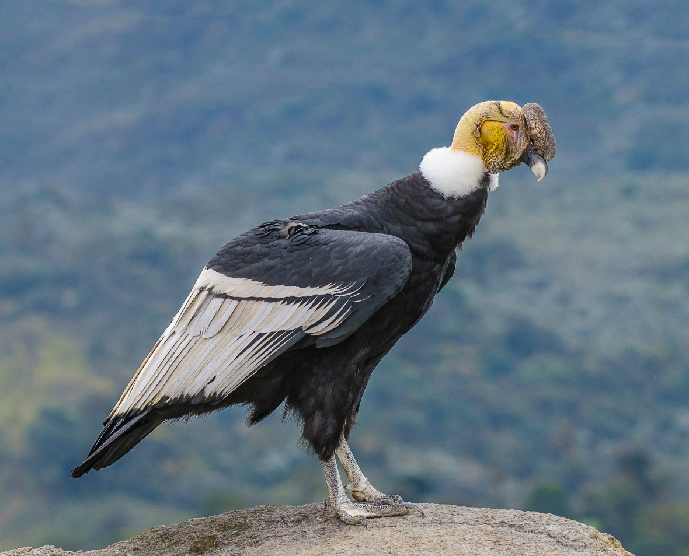
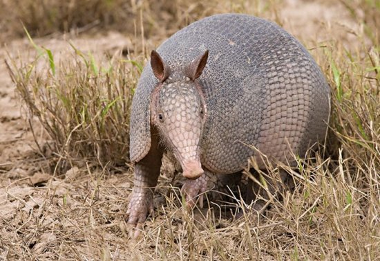
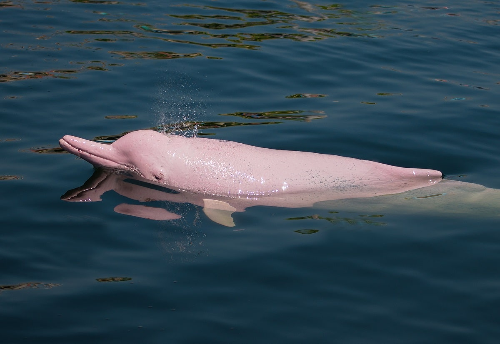
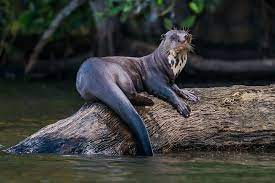
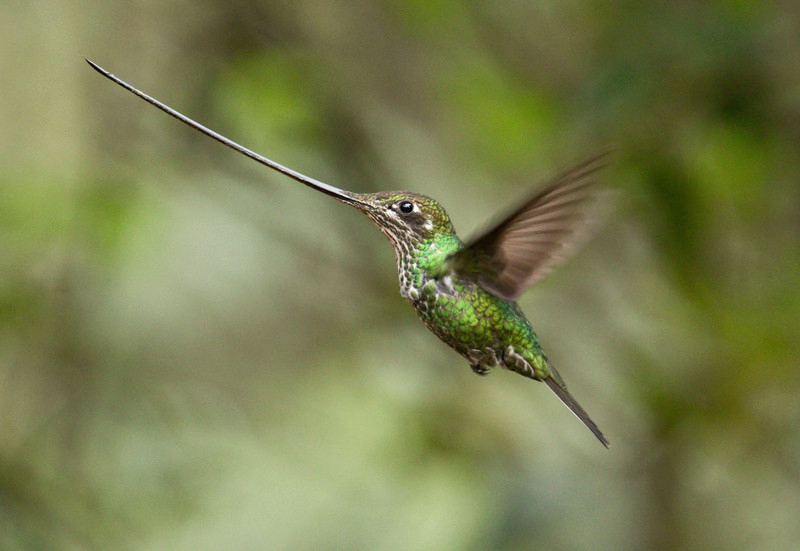

CELULAR: 0989393844
VOLVER AL INICIO
SIGUIENTE
“ ANIMALES EN EXTINCIÓN “
“ Cóndor andino “

Nombre científico: Vultur gryphus
El cóndor andino es una ave muy enorme que se encuentra entre las más grandes del mundo capaces de volar, ya que su pesa hasta 15 kilogramos, e incluso la envergadura que posee dicha ave es de 3 metros. El ligar del hábitat del cóndor es en zonas montañosas ...
“ Armadillo gigante “

Nombre científico: Priodonte maximus
El armadillo gigante, llega a tener un tamaño de 150 a 196 cm de longitud, cuyo peso es de 60kg. Su alimentación de basa en insectos, habita en la gran parte de bosques húmedos, la cual se encuentra en peligro de extinción en zonas como Ecuador debido a la caza que producen ...
“ Delfín rosado “

Nombre científico: Inia geoffrensis
Aquel animal que vive en ríos, lagunas y pantanos, las cuales están conectados al río Amazonas, está en peligro por la construcción de represas que se está llevando a cabo y por la pesca con redes, a su vez aquel delfín es víctima de la contaminación ...
“ Nutria gigante “

Nombre científico: Pteronura brasiliensis
Estos animales están en peligro de extinción en Ecuador, ya que son muy sensibles a los cambios de su hogar, como los ríos y lagunas, por la cual no tienen un solo lugar de residencia, por lo cual ellas habitan en Sucumbíos, Orellana, Napo, Pastaza, Morona Santiago, Zamora Chinchipe ...
“ Cocodrilo de la costa “
Nombre científico: Crocodylus acutus
Aquel reptil predador semiacuático se encuentra en peligro de extinción desde el 2007, es una cazador que se aprovecha casi cualquier presa que estén cerca de él, uno de sus sentidos que destaca a la perfección son la vista y el olfato ...
“ Colibrí picoespada “

Nombre científico: Ensifera ensifera
El colibrí pico espada es una de las especies que habita en los Andes, la cual es una de las aves más extrañas de Ecuador, pues posee un pico que mide hasta unos 10cm de largo y una lengua sumamente grande también, en donde les permiten succionar el néctar de las plantas ...
NOMBRE: JEAN PIERE GARNICA
CICLO: QUINTO "A"
ASIGNATURA: INTERFACES